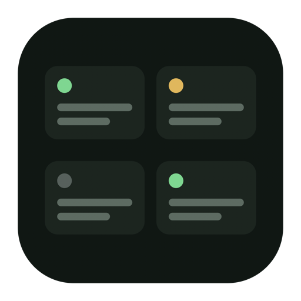

agentboard
One board for Claude Code, Codex, Cursor and opencode.
One card is one conversation. See at a glance who is working, who finished, and who is waiting for you.
macOS 13+ · free and open source
Claude Code
Codex
Cursor
opencode
Start an agent in a second — it runs in the background,
no terminal window opens.
It is a canvas, not a list. Drag the cards wherever they make sense.
A card turns amber the moment an agent needs you.
Reply straight from the card. Open the terminal only to watch.
Cards survive reboots. Your desktop stays clean.
Prefer the source?
curl -fsSL https://raw.githubusercontent.com/mikky-a/agentboard/main/install.sh | sh